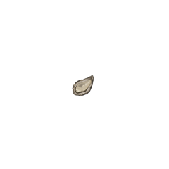

주요 관광지
-
춤추는 바다분수
세계 최초 초대형 부유식 음악분수로써 매일 밤 감미로운 선율과 화려한 빛, 거대한 물줄기에 맞춰 웅장하고 환상적인 공연이 펼쳐지고 관람객과 함께 하는 사연 소개, 프로포즈 등 다양한 프로그램으로 관광객들에게 소중한 추억을 선사하고 있다.
-
목포 해상케이블카
목포해상케이블카는 목포 시내 북항스테이션을 출발하여 유달산 정상부에서 ‘ㄱ’자로 꺾여, 해상을 지나 반달섬 고하도에 이르는 국내 최장 케이블카로 베트남 빈펄케이블카를 능가하는 아시아 최고의 노선으로 평가되고 있다.
일반캐빈 및 크리스탈캐빈 이용권 구매 가능
-

고하도전망대
13척의 판옥선을 샇아올린 모양의 고하도 전망대에서 목포와 다도해 풍경을 감상할 수 있다. 또한 해안을 따라 조성된 용오름 둘레길로 바다와 경치를 감상할 수 있다.
-
삼학도
세마리 학의 영혼이 서린 섬이란 뜻으로 삼학도 공원, 김대중 노벨평화상 기념관, 난영공원 등과 더불어 조성되어 있다. 수로를 따라 산책하기에 좋고, 수로에서 카누체험을 할 수 있다. 또한 골프체험을 할 수 있는 공간과 요트를 타고 바다를 관람할 수 있는 요트마리나도 조성되어있어 즐길거리가 다양하다.
입장료 | 무료 (카누이용 시 이용권 별도 구매)
맛집 및 카페
-

씨엘비베이커리
카페/베이커리
주소 | 전남 목포시 영산로75번길 14 1층 -

장터식당
한식
주소 | 전남 목포시 영산로40번길 23 장터식당 -

영란횟집
일식(회)
주소 | 전남 목포시 번화로 42-1